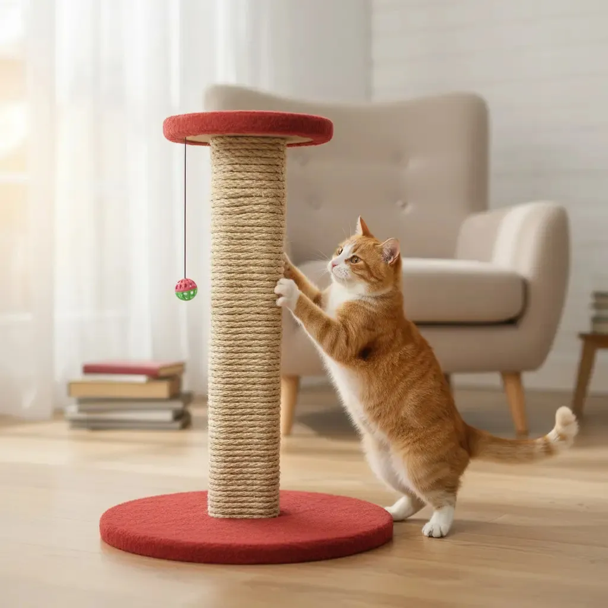
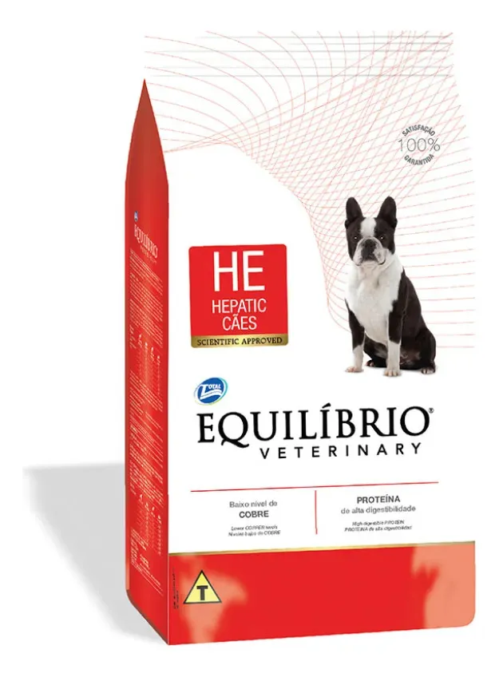
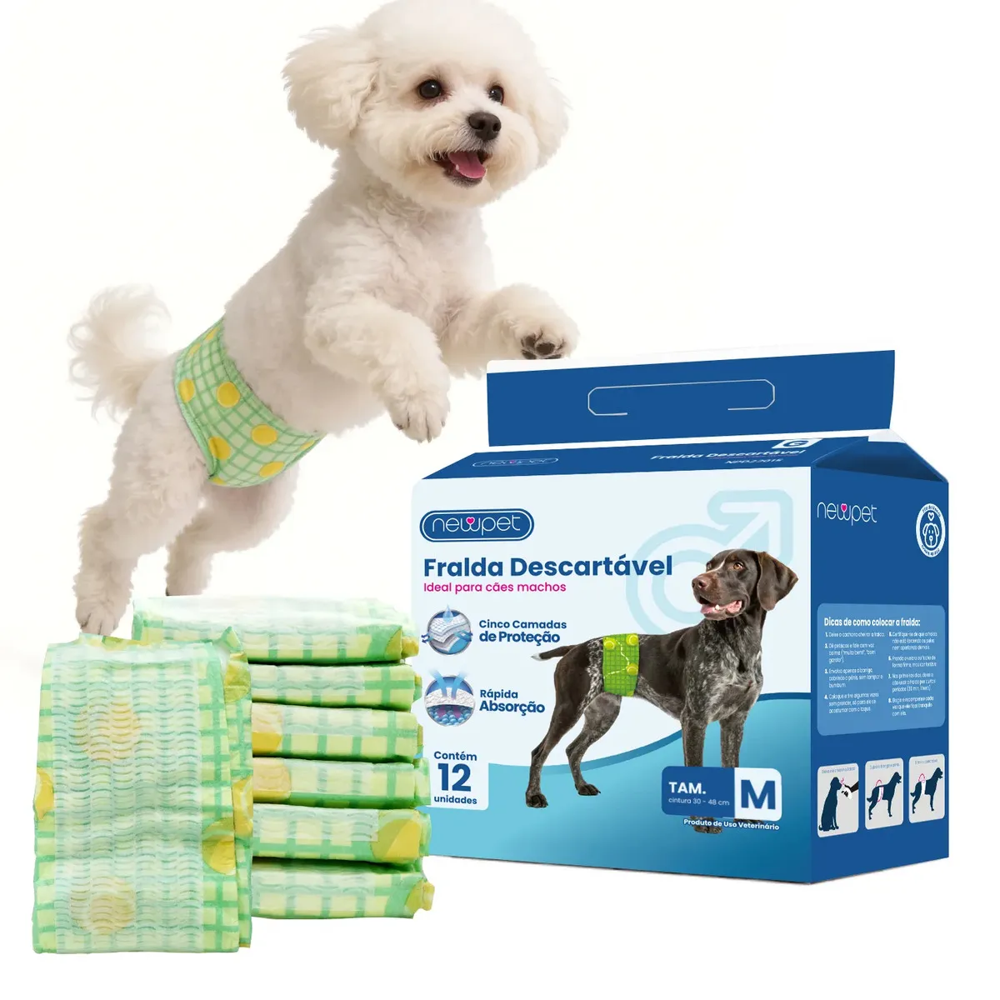
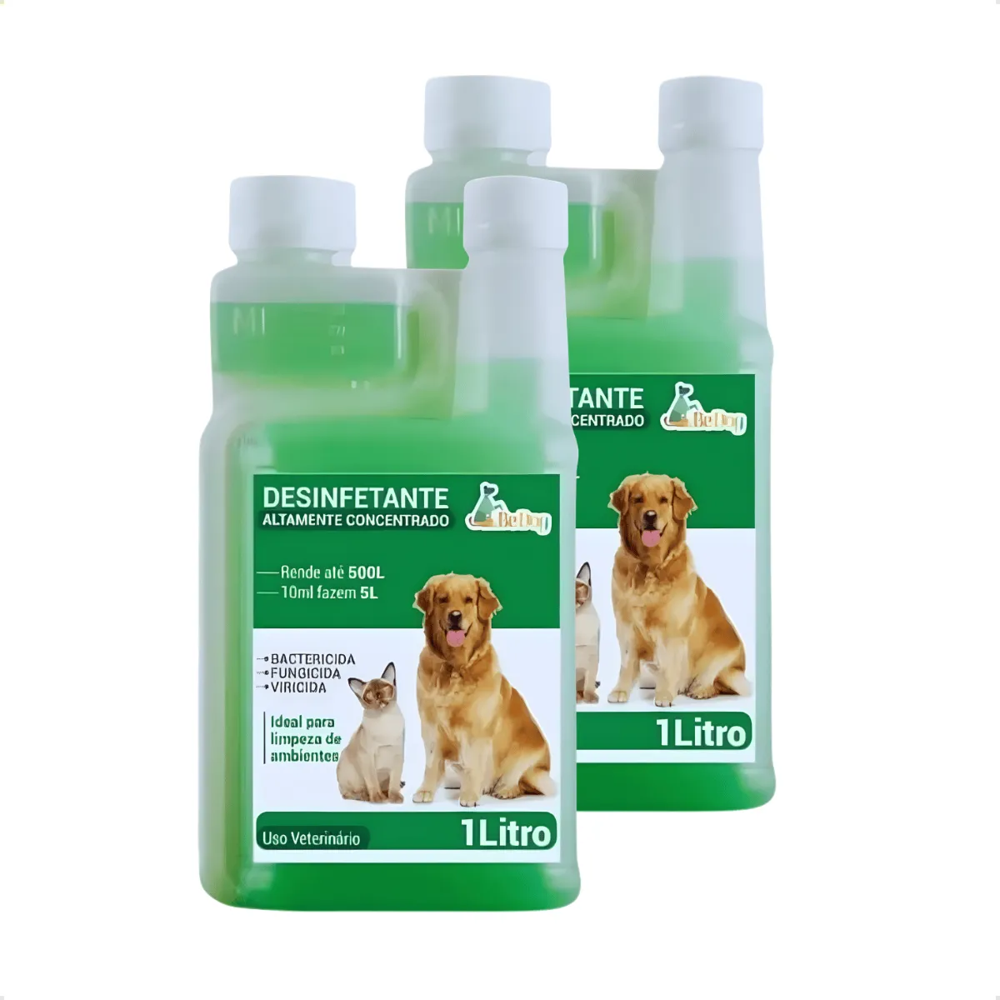

Cama Pequena Confort Pet Sonos Com Pillow Removível Cor Azul
Cama super macia e lavável, ideal para cães de pequeno e médio porte.
Valor: R$ 120,00
Cama super macia e lavável, ideal para cães de pequeno e médio porte.
Valor: R$ 120,00

O arranhar é uma atividade essencial para gatos, auxiliando no alongamento corporal e na manutenção da saúde das unhas. Este arranhador foi projetado para proporcionar firmeza, conforto e durabilidade, criando um espaço seguro para o pet.
Valor: R$ 110,00

A Ração GoldeN Special para Gatos Adultos sabor Frango e Carne foi desenvolvida para proporcionar uma alimentação completa e balanceada aos gatos na fase adulta, contribuindo para a manutenção da saúde, vitalidade e bem-estar. Indicada para o consumo diário, oferece os nutrientes necessários para apoiar as funções corporais e a energia do seu felino ao longo do dia.
Valor: R$ 260,00

O produto pode ser administrado por toda a vida do animal em casos crônicos ou conforme a regeneração do tecido hepático, mediante acompanhamento de médico veterinário.
Valor: R$ 150,00

Garanta mais proteção e conforto para o seu pet com a fralda Newpet, desenvolvida especialmente para cães machos. Com tecnologia avançada e alta capacidade de absorção, ela é perfeita para filhotes não treinados, cães que marcam território, incontinentes ou durante viagens.
Valor: R$ 29,90

O Desinfetante Be Dog Herbal possui fórmula concentrada que permite diluição, proporcionando economia e maior durabilidade do produto. Sua fragrância refrescante auxilia na neutralização de odores desagradáveis, especialmente em locais com circulação frequente de animais.
Valor: R$ 39,90